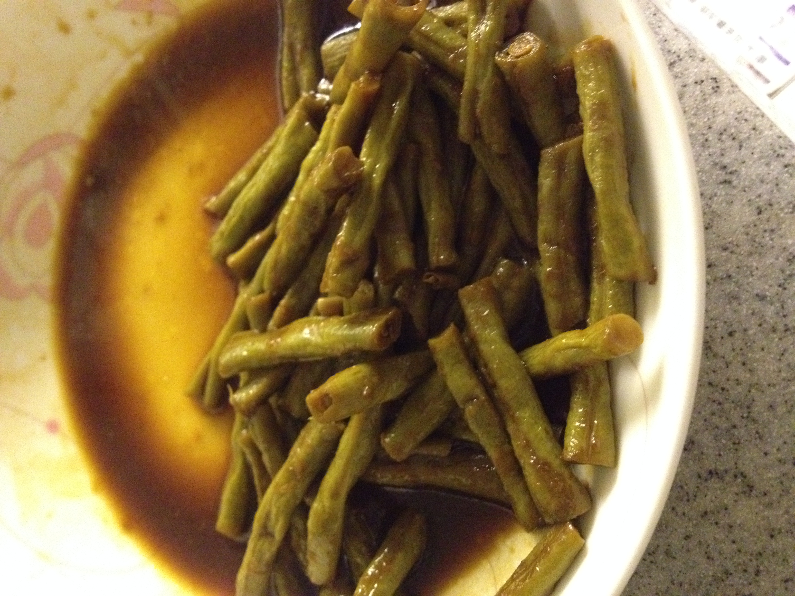

第40天
一天了，今天比较忙碌。
早上去上班了，赶着吃午饭回了家，妈妈已经在老爹吃下了满满一碗面，除了肉。
然后，换床垫、整理，之后去了威尔斯亲王医院，
预约唐氏，时间是2月28日。
妈咪本来不用去的，可惜爸比的粤语不过关，内心还是希望妈咪一起去。
回来后，开始打扫啊。之后就学做菜。今天的学到的菜为：
1. 干闷豇豆
水+老抽+生抽 --- 妈咪觉得爸比没天分，用了做简单的方法来做这个菜，但这个菜非常棒哦。

2. 豆豉排骨
豆豉+生抽+洋葱头+生姜+蚝油+葱+各种爸比喜欢的[妈咪说的]，今天这是准备，明天蒸着吃。 另外，一定要用深口的碗，本来爸比用的浅碗，被妈咪及时提醒。
注：核心是过水，就是把洗净的排骨放入沸水中，等再次沸水后捞起，用冷水冲去异水。
3. 水煮南瓜
清水+小块的南瓜